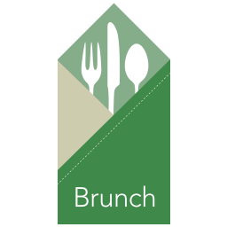
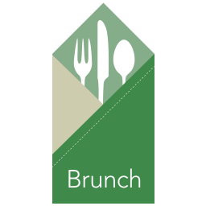
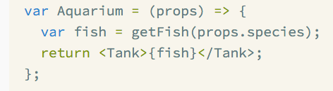
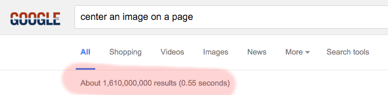
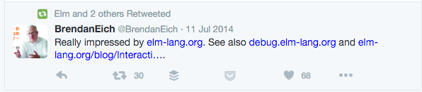
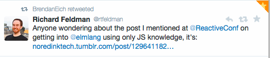

Why Elm?
Ivan Storck
http://seattlejs.elmseattle.org
Elm?
Web Developer
Teacher
& Entrepreneur
 

JSX + CSS

Undefined is not a function



Hello Elm
import Html exposing (span, text)
import Html.Attributes exposing (class)
main =
span [class "welcome-message"] [text "Hello, World!"]
Signals
import Graphics.Element exposing (..)
import Mouse
main : Signal Element
main =
Signal.map show Mouse.position
Binary Tree
type Tree a = Empty | Node a (Tree a) (Tree a)
Demonstration of Elm-Brunch